Turkey
October 12 – 24, 2026 · Istanbul
Istanbul in October is mostly grey water and good architecture. Galata Tower shows up whether you planned it or not. So does a red tram, a ferry window, a mosque you walk into just to look up, and a cat who did not agree to be in this story and is in this story anyway.
i also did some work from the apartment, which is why a few of these hours are running at the wrong speed.

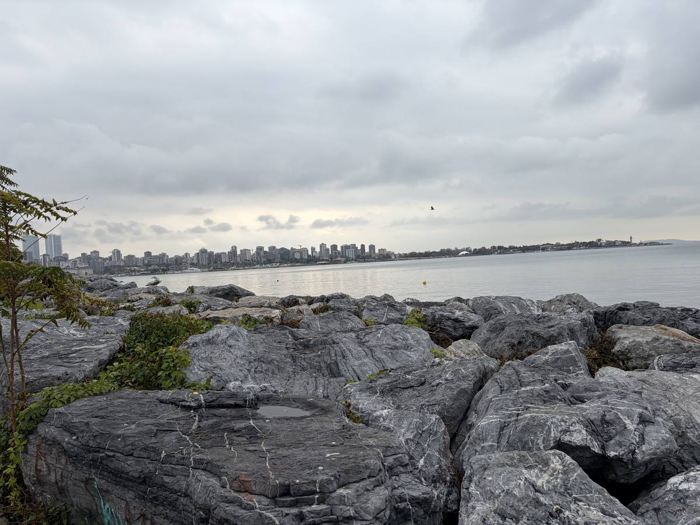
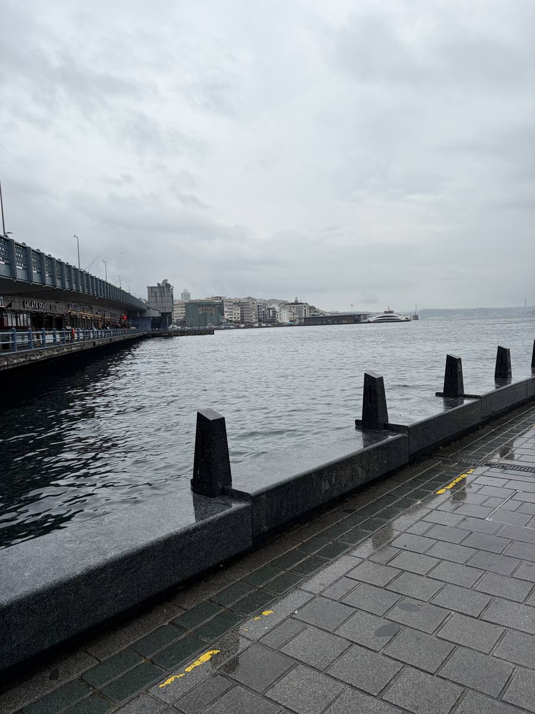
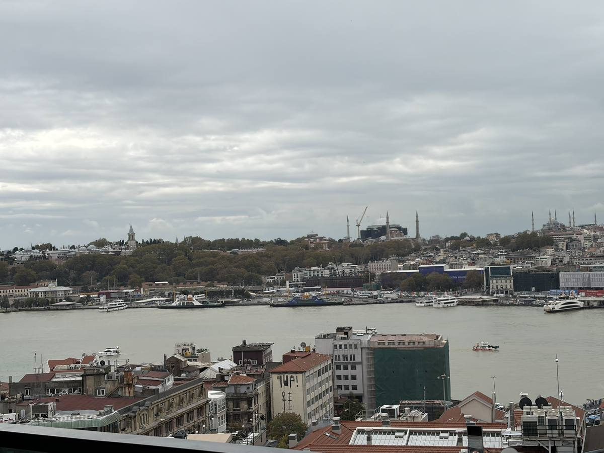
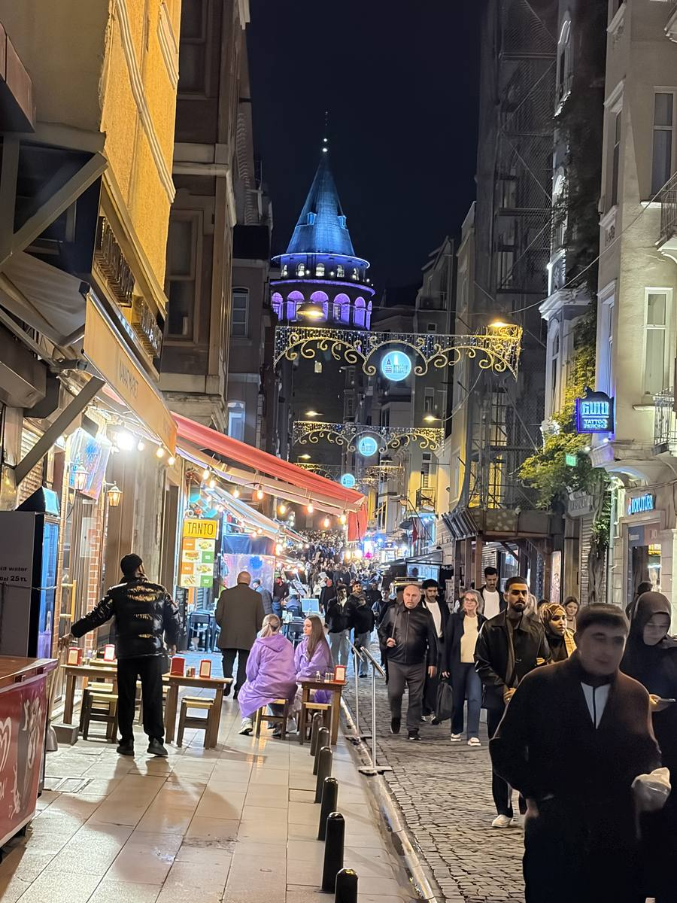
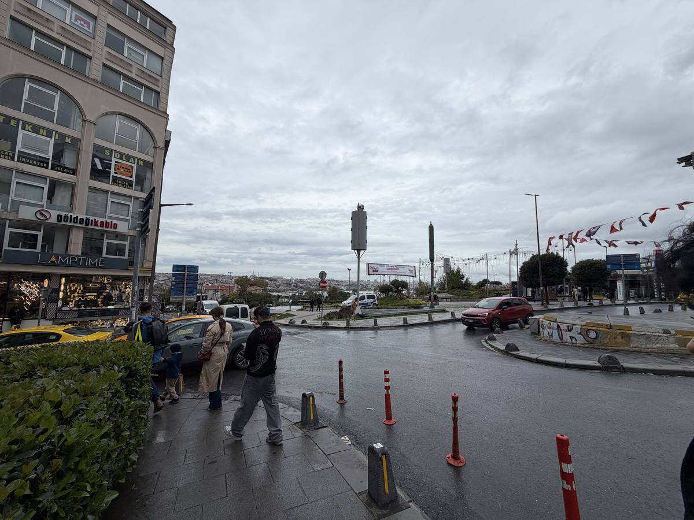
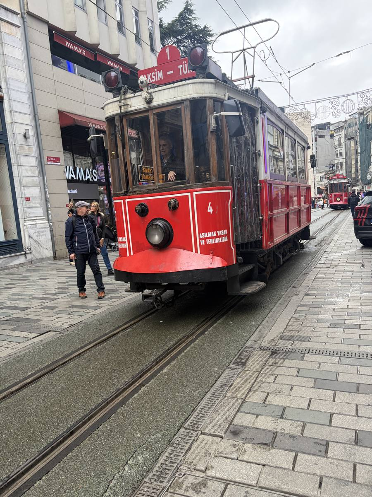
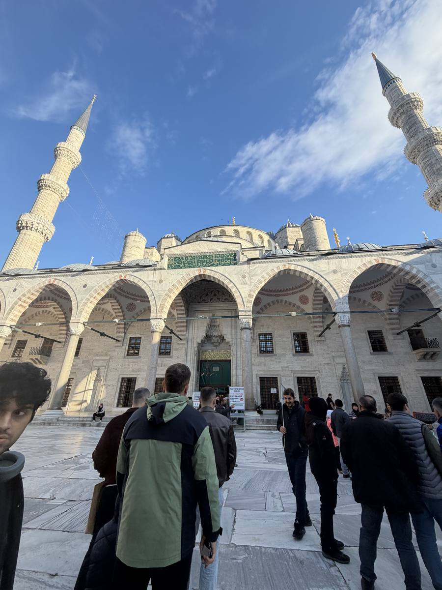
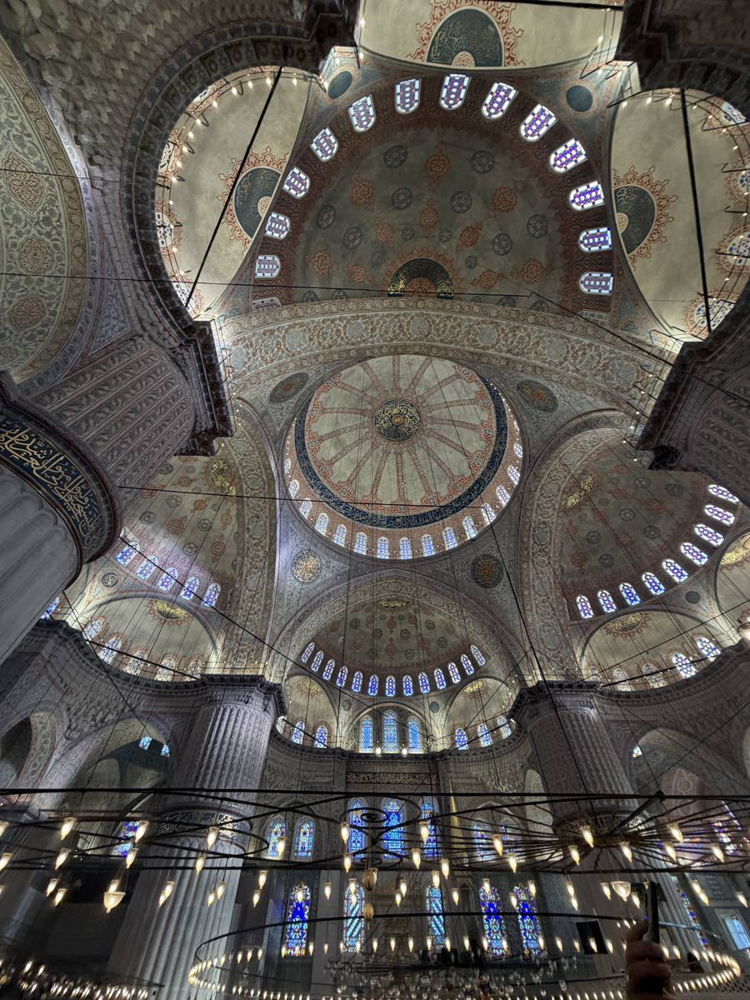
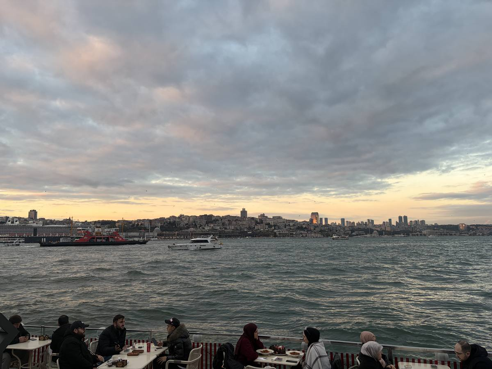
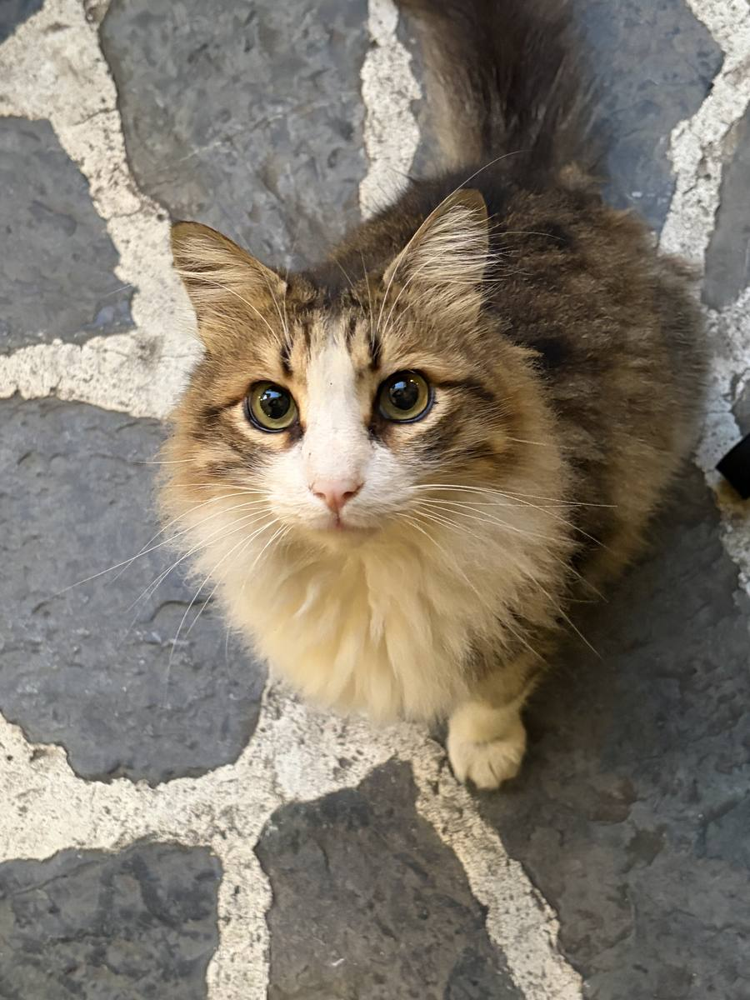
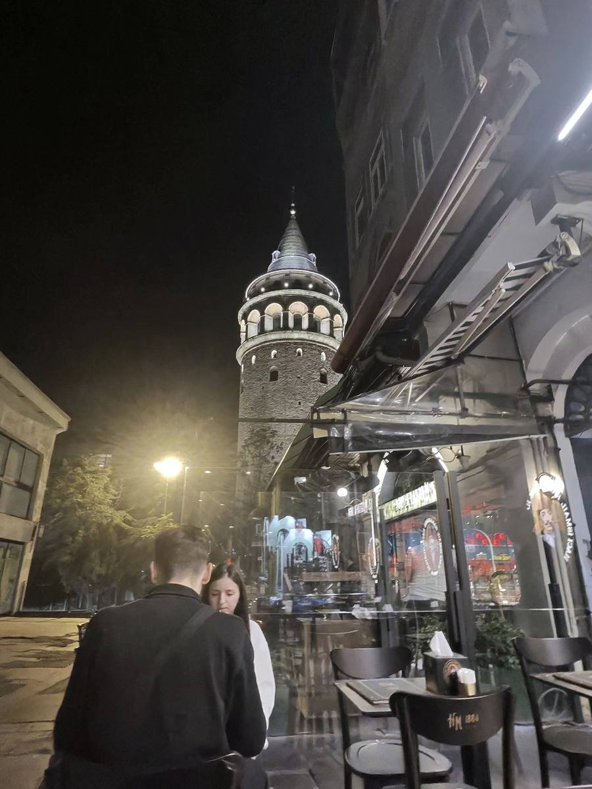